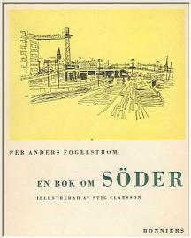
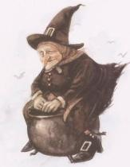
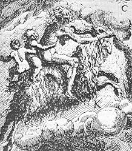
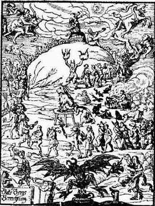
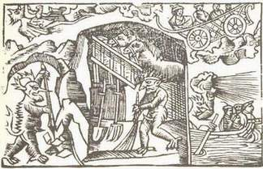
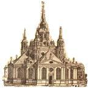

Södermalm i tid och rum. Stockholm

Ur En bok om Söder, Per Anders Fogelström, 1953 BLÅKULLABERG
"HERRE, barmhärtige och nådefulle Gud, vi äro ju ditt folk och nämnde efter din enfödde, käre son, vår Herre och Frälsare, Jesum Christum, förlåt synderna och straffa dock med ditt eget och faderligt ris och låt den lede och grymme själamördaren djävulen icke så gräseligen få rasa, ditt namn försmäda och små oskyldige barn för föräldrarnas skull jämmerligen hantera. Hjälp, milde Herre Gud, de fattige anfäktade, styrk dina tjänare prästerna med din heliga ande, att de i trona kunna göra Satan ett kraftigt motstånd, att han icke ett sådant ohörligit Regimente för över din församlings Ledamöter"
Häxbönen läses i Katarina kyrka i januari 1670, på böndagen som hålles "emot trolldomsväsendet i Bohuslän och en del socknar i Österdalarne". Men det är mer en suggestiv besvärjelse än en bön, vidskepelsen manas fram ur alla mörka hörn. Oroligt ser människorna efter varann. Husen ligger sammangyttrade vid trånga gränder och skvallret vandrar mellan portarna.
Mest är det hantverkare, småhandlare och sjöfolk som bor här på berget intill Katarina kyrka. Det finns också gott om spinnande änkor, finska pigor och "löskonor". En del av kvinnorna är ökända för sin grälsjuka, en av de viktigaste orsakerna till att den södra kämnärrätten kom till var de många och svårutredda trätorna.
Men det är inte bara trätgirighet man finner här. Också fattigdom, hat och drömmar om makt. Den stora osäkerheten, det ruvande mörkret. Vidskepelsen som närs av kyrka och lag, vid gudstjänsterna utmålar prästerna helvetets plågor och djävulens lockelser och i lagen (som gällde ända till 1864) stadgas dödsstraff för bevislig trolldom som skadat annan persons liv eller egendom.
|
Här på kyrkberget bor de, människorna som ska spela huvudrollerna i de väldiga häxprocesserna
1675-77. Det är muraren Galle med sin finskfödda hustru Britta och flickan Annika, dotter till
muraren i ett tidigare äktenskap. Det är Brittas syster Anna som är gift med bagaren Bengt Bråk.
Och skeppare Cornelius och hans Sigrid, ryttmästare Gråå med hustru och nio barn, munskänken
och drabanten Myra med sina två finska pigor, den gamla finska gumman Rumpare-Malin, pigan
Lisbeth Carlsdotter, hökaren Jöran Gottersson med hustrun Kerstin Ambjörnsdotter, kapten Remmer med hustrun Margareta, kaplanen i Katarina Henrik Myrander,
klockaren Erik Simonsson och många andra. Samt några tyskar - skollärare Kron med familj
och organist Krull som spelar så vackert på klockverket i St Gertrud.
Och en dag kommer en pojke från Gävle för att bo hos sina släktingar i Katarina. Tolv år är han, Johan Johansson Griis heter han. Han kommer därför att han blivit föräldralös, hans mor har avrättats i Gävle för trolldom, dubbelt hor och blodskam. |
 |
Tidigare har trätorna mellan människorna på berget visserligen varit svåra men ändå inte lett till några större tragedier. Kyrkmurare Friedrichs omtöcknade maka har anklagat sin bror för trolleri men den saken har klarats upp, alla vet ju att murarfrun är sinnessjuk. Och kyrkmurare Galle och hans bråkiga Britta har anklagat en kvinna för signerier - men konsistoriet beslutar bara att kvinnan hänvisas till kyrkoherden i Katarina som ska tala henne till rätta.
Det är kring Britta Galle som skvallret på allvar börjar ta fart. Britta är upprörd över att hon kallas "Näslöskan" därför att "frantzoserna ätit upp näsona" på hennes man, muraren. Särskilt är hon förgrymmad på skeppare Cornelius och hans maka, det påstås att Britta fått djävulen att tre gånger rycka skepparen av hästen när han färdats utanför tullporten. Redan när han gifte sej varnades murmästare Galle av beskäftiga vänner för den trollkunniga Britta. Men nu är allt för sent, man nöjer sej inte längre med att någon bara talas till rätta. Trollpacka, skriker barnen efter Näslöskan när hon visar sej på gatan. Gävle-pojken, som Johan Griis kallas, står i centrum för händelserna. I hökargården där pojken bor faller barnen till marken "liksom vore de dånande" och efteråt berättar de att de blivit förda till Blåkulla av trollkvinnor. Gävlepojken har också skrutit med att han långt tidigare i sin mors sällskap många gånger deltagit i "Satans samkväm".
Ängsliga föräldrar lyssnar på mörkrädda och gråtande eller förnumstigt berättande barnungar som talar om att de tvingats delta i orgier av olika slag. Skräcken smyger i gränderna på berget, de vuxna samtalar om djävulens konster och barnen lyssnar och drömmer mardrömmar. Barnfantasin spelar och när de vuxna på mornarna utfrågar barnen om nattens upplevelser så berättar de mer och mer för varje ny fråga. Något måste göras, man diskuterar möjliga åtgärder. Ryttmästare Gråå är den förste som anordnar vakstuga, man samlar alla husets barn i ett rum och sätter några kvinnor att vaka över dom. Idén sprider sej snabbt.
En deputation av uppskrämda Katarinabor vandrar upp till presidenten i Svea Hovrätt, riksrådet Bengt Horn, och överlämnar den 2 mars 1676 en skrivelse:
"Uti djupaste ödmjukhet äro vi fattige syndare och sorgbundne föräldrar från St. Catharina församling på Södermalm förorsakade med denna vår enfaldiga böneskrift inför Högvälborne Herren att komma och i Jesu namn bedjandes om hjälp och tröst emot Satans våld och raseri. . ."
|
 |
Och man berättar att barn och ungdomar förs bort varje natt, ja ibland upp till fyra gånger på en natt, och klagar över att häxorna trots barnens anklagelser "äro lika styva", de nekar hårdnackat. Första vakstugan hos ryttmästare Peter Gråå. Hans nio barn har länge anfäktats av Näslöskan och hennes väninna, mössmakerskan Anna Månsdotter som kallas "Vipp-upp-med-näsan". Två kvinnor vakar över barnen, de -sitter och berättar tyst för varann om häxornas konster: Trollpackan sticker en nål i väggen, genom hålet slinker hon in i stugan. Sen ansätter hon barnen och tvingar dom att sätta sej upp på en lång stång som hon smörjt med salva ur ett horn som Satan gett henne. Och så bär det iväg - kanske till postmästareträdgården nere vid Fatburssjön. För att ingen ska märka att barnen är borta placerar häxan träkubbar i sängarna och dessa antar snabbt de bortflugnas skepnader. Om man sticker "hamnen" är den okänslig som trä. För barnet är ju borta ... är med om orgierna i Blåkulla. |
Girigt lyssnar de små på de vuxnas ord, lever i en underlig och hemsk sagovärld, i en skräckfantasi som blivit verklighet. Det dröjer inte länge den första natten i vakstugan förrän pojken Nils Gråå vaknar och säjer: "Rätt nu kommer trollpackan". Det är en signal, alla barnen ropar i ångest: "Nu tar hon bort oss!" På de vuxnas oroliga frågor svarar de att nu är trollpackan i farstun, nu sticker hon sin nål genom väggen till rummet - och så: "Si, där är hon! Si där är hon!" De visar fram en käpp som stått i ett hörn. Den ena av vakterskorna hugger efter häxan med en yxa, hon träffar inte men häxan försvinner ut. Om en stund är trollpackan där igen och sticker sin nål i väggen och nu kan också pigan se hennes huvud. Barnen skriker, yxhuggen faller igen. "Nu råkade du henne", hojtar ungarna, "du högg håret av henne". "Och när hon begynte se till fann hon hår både på yxan och på väggen," heter det i redogörelsen för den första vakstugan på berget.
Barnen är besatta och i vakstugorna sprids smittan, "en epidemisk barnhysteri" talar en nutida själsläkare om. En dotter till Gråå har blivit piskad i Blåkulla, berättar hon. Hovrätten skickar stadsbarberaren Schultz och en yrkesbroder till denne för att "besiktiga" flickan och de återvänder med beskedet att hon inte har några märken "men ömmade när man aldrig så sakta strök på kroppen". Klockare Simonsson i Katarina berättar att barnen som varit lugna så länge prästerna stannat i vakstugan anfäktats på morronen, en pojke har stått på huvudet i en vrå och hjälpts tillrätta av Annika Gråå.
Anklagelsematerialet samlas. Barnen ropar häxornas namn: Näslöskan, Bagar-Anna, Vipp-upp-med-näsan. Bland anklagarna står Näslöskans styvdotter Annika, barnen Gråå, Myras pigor, Gävlepojken, Lisbeth Carlsdotter och många andra.
Vipp-upp-med-näsan nekar till allt. Det barnen har upplevt har varit drömsyner och sånt som elaka människor inbillat dom, säjer hon. Det vore bättre om barnen hölls i skolan och inte fick löpa efter gatorna. Och när ingenting hjälper säjer mössmakerskan till sist: "Om jag kunde frälsa barnen med mitt blod ville jag gärna låta mitt liv".
Näslöskan och hennes syster nekar också. Och när dödsdomen avkunnas säjer Bengt Bagares hustru: "Nå i Jesu namn. Oskyldig är jag. Gud upplyse eder och låte eder ha fällt en sådan dom som I kunnen försvara". De tre första offren avrättas i april 1676. "Androm ogudacktigom till skräck och wharnagel och sigh till wälförtient straff halshuggas och å båhle brännas".
Men det är bara början. Smittan sprider sej, samma dag som de tre första häxorna bränns anmäler sej självmant en ung finska, Margareta Matsdotter, och berättar att hon förts till Blåkulla av en gammal gumma vid Bondegatan. Margareta erkänner också att hon själv kan häxkonster, hon har lärt sej "molka och göra plåtar" och har gömt sex plåtar på galgberget. Man söker - men hittar ingenting, "den elake" har undanröjt sina spår. Hon avrättas i maj samma år tillsammans med ytterligare ett par häxor.
|
 |
De vanliga domstolarna hinner inte med längre, en särskild rannsakningskommission med
sex andliga och sex "världsliga" ledamöter tillsätts, en av de världsliga är den unge läkaren
Urban Hjärne. Till kommissionen kommer nu de klagande. Kyrkoherden i Jacob släpar med sej sina nio barn och har långa skrivna redogörelser, han har antecknat de "oböner" barnen lärt sej i Blåkulla. En annan prästman berättar att en av häxorna för att få "rusgalet öl" brukar släppa "bukens väder" över ölkaret. Han hade dock inte lagt märke till om "hon någen materie haver låtit i ölkaret". Berättelserna blir alltmer drastiska. Bagare Bengt, den avrättade Annas make, har setts i Blåkulla knådande deg med baken. Flera häxor har stående på huvudet använt samma kroppsdel som ljusstake. Småflickorna har haft samlag med djävlar och fött grodor som Satan kokat soppa på, soppan fylls i häxornas smörjelsehorn. Och musiken vid dansorgierna består av de kraftiga ljud som uppstår när häxorna släpper sej. Man förhör, noterar, torterar (tillstånd har givits: "Någon tortyr, dock icke alltför hård"). |
I augusti 1676 kan den nya domstolen sända sina första offer till bålet, det är den gamla finskan Rumpare-Malin (som liksom Näslöskan har en anklagande dotter med namnet Annika) och Tysk-Anna. I bakgrunden står de vanliga angiverskorna. Tysk-Anna halshöggs och brändes, hon kallades "devot och andäktig". Annorlunda var det med gamla Malin. Hon hade förorsakat strid inom rätten, som en verkligt förhärdad trollpacka hade hon till slut dömts till att brännas levande.
Att utreda anklagelsernas riktighet hade inte varit så svårt - Malins egen dotter talade ju emot henne. Men domens hårdhetsgrad hade mycket diskuterats. Några hade förordat att hon skulle upplysas om att hon ska brännas levande men få undergå ett sista förhör intill bålet - erkänner hon då ska hon av nåd halshuggas före brännandet. Andra ville att hon utan ytterligare chans att bekänna ska brännas levande ("på grund av att man bör mer se på Guds namns ära än hennes olidliga pina", sade pastor Carolinus i Clara). En, Urban Hjärne, hade avvikande mening. Han förelsog att Malin först skulle nypas med heta tänger. . . "efter som det andra vore allt för grymt". De heta tängerna skulle göra Rumpare-Malin medvetslös innan hon lämnades till lågorna. Rumpare-Malin står hård och säker inför rätten. Hon erkänner inte. Hon vägrar ta avsked av sin dotter. Hon ger prästerna skarpa svar och låter lugnt bödeln slå hennes händer och fötter i järn. Hon fäller inte en tår. När hon stiger upp på bålet ropar hon ut att hon är oskyldig. Dottern Annika som fällt sin mor skriker och ber att modern ska "rädda sin själ". Men Malin "gav dottern i den ondes våld och förbannade henne till evig tid, varmed de alltså skildes". Malin dog i lågorna utan att någon hörde ett jämmerrop. Det togs som ytterligare ett bevis för gummans förbund med den onde.
|
Och kaplan Myrander i Katarina är också misstänkt. Myras Annika och Lisbeth Carlsdotter har sett hur hökarhustrun Kerstin Ambjörnsdotter begagnat kaplanen att rida på när hon med fyrti barn på prästryggen gett sej iväg till Blåkulla. Kerstin hör till dom som avrättas men kaplanen betraktas som ett oskyldigt och missbrukat verktyg. Det börjar ta emot, anklagelserna riktas för högt. Och Urban Hjärne kan inte riktigt vara med längre. Han vandrar i vakstugorna - "och då de sig stälte at wara bortförde, hölt jag dem starka spiritus under näsan". Mer behövs inte, då vaknar "de bortförda" till liv igen. Och läkaren tänker att det är konstigt med den makt som denna hop "sielfzwåldige barn" har.
Under tiden råkar den tyske organisten Krull i Urvädersgränd illa ut. Han hyr ut bostad åt en tysk lärare och lärarfrun är svår att tas med, särskilt sen Krull klagat över att man skriker och sjunger psalmer i fruns vakstuga hela nätterna och att barnen när de på morronen rusar därifrån har slagit sönder hans fönster med stenar. Vakstugan är lärarfruns ögonsten, i rätten antecknar sekreteraren att "hon sätter mer tro till sin vakstuga än till Guds ord". Nu får Krull också alla barnen emot sej, de berättar att han piskat dem i Blåkulla och att de sett honom spela på klockor där precis som i Tyska kyrkan (Krulls klockspel i kyrkan var en attraktion som drog många åhörare).
Larmande ungar står och "klockspelar" med händerna i gången intill häktet i stadhuset. Men lärarfrun är för sent ute, strömmen har vänt. Mer och mer finner Hjärne att alla anklagelser till sist kan härledas till några få. Omkring dussinet häxor har avrättats när Gävlepojken som tagits i förhör erkänner att han "vet intet utav Blåkulla utan lärt i Gävle det beskriva".
|
 |
Prästen Erik Noraeus i Storkyrkoförsamlingen, som utan betänkande dömt Rumpare-Malin att brännas levande "sig själv till omvändelse och androm till avsky", sluter upp på Hjärnes sida. Han håller ett tal och förklarar att hädanefter kan han inte med gott samvete döma någon häxanklagad till döden. Hela anklagelsematerialet rasar ihop. En gråtande femtonåring erkänner att hon ljugit mot kaptenskan Remmer, hon försvarar sej med att det är "sådana tider att den som icke säger sig föras bliver förföljd". En annan flicka skyller på att man hållit med mat och dryck i vakstugorna och berättar att hon fått "särkar och skor" av en familj där hon lyckats övertala barnen att de "fördes". Gävlepojkens |
Alla skyller på alla - den som inte höll med och anklagade riskerade att bli ansedd att "vara utlärd och nu med barnaförande sig försynda", så lyder försvaret. Kanske det är typiskt att flera av angiverskorna var finskor och tyskor liksom deras offer. "De främmande" utsattes lättast för misstankar och det gällde att hastigt hamna på rätt sida, bland "de förda" och inte bland häxorna.
Förhören fortsätter. Hjärne skildrar i sin självbiografi hur han mer och mer finner att allt bara är "sammansatt sqwaller" av lättfärdiga pigor och självsvåldiga pojkar som gett sej in i det hela för att "slippa alt näringz bekymmer och arbete". Flickorna bereder doktorn betydligt större bekymmer än pojkarna varför han något retad konstaterar att man "granneligen såg att malicen och argheten utj qwinkiönet, när den får råda, mycket större är än utj mankiönet".
Tretton år gammal förs Gävlepojken till avrättningsplatsen. Lisbeth Carlsdotter och en av Myras pigor, Agnes Eskilsdotter, samt tjugotvååriga Maria Nilsdotter som levt på konsten att lära barnen bli anfäktade döms också till döden och avrättas på Hötorget. Om Lisbeth heter det att hon dömdes "såsom Guds heliga namns faseliga försmäderska, såsom en mörderska, såsom en menederska, såsom en vederstygglig lögnerska och såsom många enfaldiga barnasjälars fördärverska".
Många av dramats mindre bovar dömdes till spöstraff, bland andra tre Annikor - Myras, Näslöskans och Rumpare-Malins. I fyra dagar (fem för Rumpare-Malins dotter) fick de stå på olika torg kedjade vid pålar och "varstans av därtill beställte gubbar med ris piskas". Efter kroppsstraffet väntade "kyrkodisciplin" och flerårig tukthusvistelse. Näslöskans Annika uthärdade inte den stränga bestraffningen utan dog sedan hon avlagt "en vacker och ångerfull syndabekännelse". När de som fört så många till döden själva fick sitt straff hade de fortfarande sina sympatisörer, "de beställte gubbarna" klagade över att man kastade sten och snöbollar på dom.
Vid Lisbeth Carlsdotters illegala begravning visade det sej också att en del av kyrkans folk inte betraktade häxanklagerskorna som några "Guds namns faseliga försmäderskor". Kaplanen Myrander tillrättavisades nämligen och fick offentligen återta begravningstalet av vilket det framgick att han ansåg Lisbeth oskyldigt undergått "en försmädlig död". Klockare Simonsson som insamlat smickrande personuppgifter om den avrättade dömdes till böter.
Det stora trolldomsraseriet var över. Och gamla papper berättar att det är "en lust att bo på Malmen" där de förr så besvärliga barnen blivit "mycket glade och lika som andra människor".
Mitt på häxornas berg står Katarina kyrka, i den sammanträdde kommissorialrätten många
gånger. Under häxprocessernas tid var Katarina en ny kyrka, ännu inte helt färdig.
Södermalm hade 1654 delats i två församlingar - till Mariaherdens stora förargelse - och två år
senare lades grunden till Katarina kyrka som fick namn efter Karl X Gustafs moder.
Intill kyrkan hade tidigare legat ett litet kapell, Sturekapellet, som uppfördes omkring 1540 på
den mark där Sten Sture den yngres och hans lille sons kvarlevor blivit brända tillsammans
med offren för Stockholms blodbad. Under en lång tid, sen Maria kyrka rivits, var Sturekapellet Söders församlingskyrka. Efter Mariakyrkans återuppbyggnad förföll kapellet och
användes endast för militärgudstjänster samtidigt som finska församlingen fick begagna
kyrkogården som sin begravningsplats.
Församlingsdelningens år, 1654, restes en provisorisk "brädekyrka" på kapellets plats. Orgel
till brädekyrkan lånades - och bars fram och tillbaka - från Riddarholmskyrkan.
Kyrkbygget krävde mycket av den nya och fattiga församlingen. En del medel kom genom
kollekter och insamlingar, annat erhölls genom kungliga påbud från stadens övriga
församlingar. Församlingsborna fick satsa vad de kunde, det var vanligt att sjömännen gav en
gåva som tackoffer vid lycklig hemkomst, i räkenskaperna finns även noterat att
församlingsbon bödeln skänkt sin skärv. Många lämnade gåvor in natura, riksrådet Salvius'
arvingar skänkte skuldsedlar, en dräng testamenterade sin grå häst.
En viktig inkomstpost blev de böter som en del adelsmän dömts till av Stockholms hovrätt. Bäst
ihågkommen bland dessa ofrivilliga givare är väl hovkansler Tungel, han dömdes 1661 att
lämna kyrkan tretusen daler kopparmynt "för en närmare, olovlig bekantskap med Elisabeth
Cygnae i konungens egen stol i rådkammaren". Tungel kom undan med böter och ämbetets
förlust - Elisabeth fick "stå straff i Rådhusförstugan med rygghuden".
Arbetarna vid bygget uppmuntrades genom befrielse från
krigstjänst och bjöds ibland på öl, för - sade kyrkoherde Ahrenbeckius - "man bör inte binda
munnen till för oxen som tröskar". Många kvinnor arbetade också vid bygget, bland annat som
tegelbärerskor.

Långt innan kyrkan var klar började den användas. I tio år begagnade man även vintertid en
taklös kyrka som saknade fönster och dörrar. Många kända Söderbor ligger begravda i kyrkan
och på kyrkogården, bl. a. Jean De la Vallee, Gavelius, Leijonancker, Lillienhoff, boktryckare
Keijser, glasblåsare Jung, Lars Wivallius.
Vid branden 1723 skadades kyrkan mycket svårt, klockorna smälte i hettan när tornets trävirke
brann och malmen rann ner genom öppningen i kyrkans mittvalv. Även många gravar förstördes
men murarna och valven höll.
Det fria läget högt uppe på berget medförde att Katarinakyrkans torn blev en utmärkt utsiktsplats.
Från tornet hade brandvakten god sikt över staden och därifrån gjordes också - enligt Eler, 1800 - de
första telegrafiska försöken åt skärgårdssidan.
Bygget gick sakta framåt. Arkitekt Jean De la Vallee visade inte något större intresse för sitt verk,
han var också byggmästare men höll sej borta från byggnadskommitténs möten och klagade över för
låg lön. Dessutom hade han många arbeten igång samtidigt, i Stockholm stod han för uppförandet av
Riddarhuset, Wrangelska palatset och Hedvig Eleonora kyrka, både i Stockholm och i landsorten
hade han också
samtidigt "mindre beställningar".